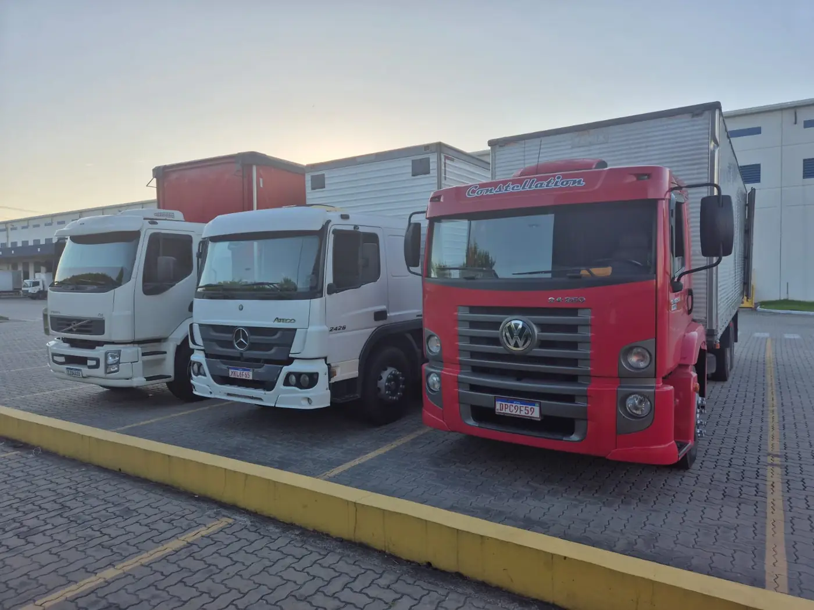
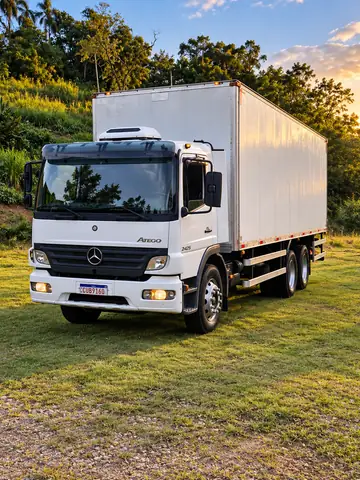
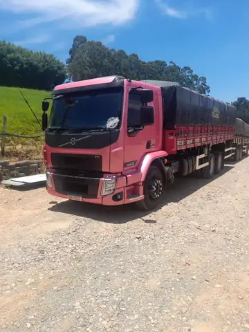
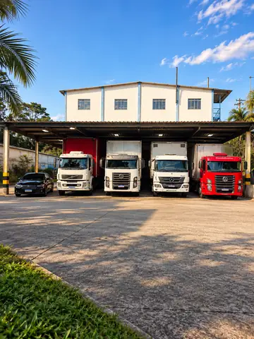
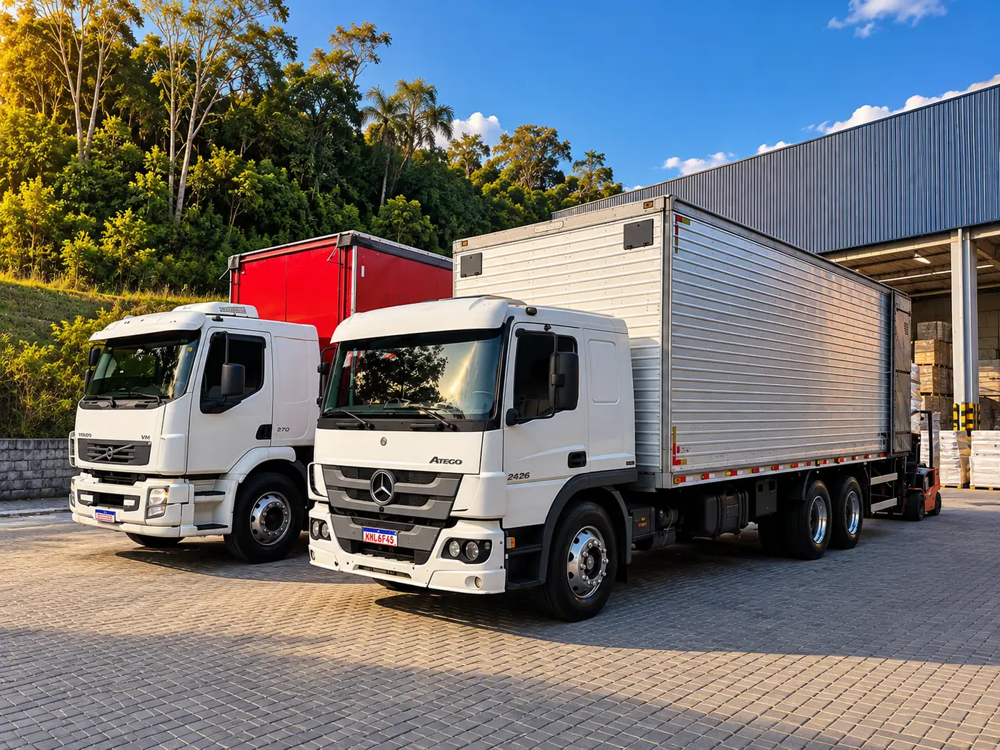

Sua carga segurada
do embarque à entrega.
11 caminhões próprios, seguro até o valor da nota fiscal e rastreio por satélite em todas as viagens. Pedido confirmado até as 11h é entregue no mesmo dia na Grande São Paulo.
Seguro
RCTR-C e RC-DC em toda viagemAté a NFValor da nota fiscalRastreio
Rastreador por satélite24 hBloqueio remotoFrota própria
Caminhões e motoristas da casa11Cotia, SP
- Seguro RCTR-C e RC-DC
- Rastreio 24 h com bloqueio remoto
- Caminhões e motoristas próprios
- RNTRC ativo na ANTT
Do primeiro contato ao canhoto
Da sua doca ao canhoto assinado
A mesma empresa cuida da carga do começo ao fim: a coleta, o caminhão, o motorista e o seguro são da ZUPO.
- 1
Cotação
Você manda origem, destino, peso e volumes pelo WhatsApp e recebe o valor em até 30 minutos.
- 2
Coleta
Pedido confirmado até as 11h é coletado no mesmo dia. O motorista confere os volumes com a nota e fotografa a carga arrumada no baú.
Conferência e foto - 3
Estrada
A central acompanha o caminhão por satélite e bloqueia o veículo se ele sair da rota. A chave do CT-e chega no seu WhatsApp para você consultar na Sefaz.
Rastreio e bloqueio - 4
Entrega
O motorista fotografa o canhoto assinado e manda para você assim que descarrega.
Comprovante na hora
Seguro em todo o trajeto, até o valor da nota fiscal
O RCTR-C cobre acidente com o caminhão e o RC-DC cobre roubo e desvio de carga. Se houver sinistro, a ZUPO abre o processo com a seguradora e acompanha até a indenização.
Da caixa avulsa à carga fechada
Carga fracionada
Sua carga divide o caminhão com a de outros clientes que vão para a mesma região, e você paga pelo espaço que ocupa.
1 caixa a 10 paletesLotação
O caminhão inteiro é seu. Ele sai da sua doca direto para o destino, sem passar por outro depósito.
Baú ou graneleiro até 14 tEntrega no centro com VUC
O VUC pode circular na Zona de Máxima Restrição de Circulação de São Paulo, onde caminhão comum tem horário restrito.
2 VUCs na frotaTransporte dedicado
Um caminhão e um motorista fixos para a sua operação, com rota e horários fechados por contrato mensal.
Contrato mensalColeta programada
O caminhão passa na sua empresa nos dias e no horário combinados e leva o que estiver separado.
Dias e horário fixos
Não sabe qual serviço usar? Conte o que precisa transportar no WhatsApp e a gente indica o caminhão.
11 caminhões, todos da casa
Desde 2008 no Jardim Nova Coimbra, ao lado da Raposo Tavares. Nenhum frete é repassado a terceiros. Os caminhões passam por revisão a cada 10 mil km e têm idade média de 5 anos.
- 2 VUCs baúaté 3 t
- 3 tocos baúaté 6 t
- 4 trucks baúaté 14 t
- 2 graneleiros com lonaaté 14 t



Saímos de Cotia pela Raposo Tavares
Pelo Rodoanel, o caminhão chega à Anhanguera, à Bandeirantes, à Dutra e à Imigrantes sem atravessar a capital.
Coleta e entrega todo dia útil em Cotia, Vargem Grande Paulista, Embu das Artes, Itapevi, Jandira, Barueri, Carapicuíba, Osasco, Taboão da Serra, São Paulo, Guarulhos e no ABC.
Cotia (SP), CEP 06702-170 · Abrir no mapa
Prazos saindo de Cotia
- Grande São Paulo e capitalPedido confirmado até 11h
- Mesmo dia
- Campinas, Sorocaba, Jundiaí e São José dos Campos
- 1 dia útil
- Baixada Santista e litoral norte
- 1 dia útil
- Interior de SPAcima de 200 km
- 2 dias úteis
- Sul de Minas, Rio de Janeiro e ParanáLotação ou fracionado consolidado
- 2 a 3 dias

Precisa entregar hoje?
Confirme até as 11h e a coleta sai ainda pela manhã, com o mesmo seguro e o mesmo rastreio de qualquer viagem.
Pedir coleta para hojePerguntas frequentes
Não achou a resposta? Pergunte no WhatsApp (11) 99585-4072.
A carga viaja com seguro?
Sim. Toda viagem da ZUPO sai com seguro RCTR-C, obrigatório para transportadoras, que cobre acidente com o veículo, e RC-DC, que cobre roubo e desvio de carga. A cobertura vai até o valor da nota fiscal.
O que acontece se a carga for roubada ou avariada?
A ZUPO abre o sinistro com a seguradora e acompanha o processo até a indenização, que vai até o valor da nota fiscal. Confira se a nota que acompanha a carga tem o valor correto.
Como acompanho a entrega?
Pela chave do CT-e, que enviamos no seu WhatsApp e que também vem no DACTE junto da carga. Na aba Rastrear carga do site, a chave é copiada e a consulta pública da Sefaz abre. O evento MDF-e autorizado aparece quando a carga sai para entrega.
Vocês coletam no mesmo dia?
Sim, na Grande São Paulo, para pedidos confirmados até as 11h. Pedidos confirmados depois disso são coletados no dia útil seguinte.
Vocês entregam no centro expandido de São Paulo?
Sim. Os dois VUCs da frota podem circular na Zona de Máxima Restrição de Circulação (ZMRC), onde caminhões maiores têm horário restrito. Veja os detalhes na página de entrega com VUC.
Existe peso mínimo para carga fracionada?
Não. A ZUPO leva de uma caixa a vários paletes. Abaixo de 30 kg vale a taxa mínima de frete.
O que preciso informar para cotar?
Cidade de coleta, cidade de entrega, peso, número de volumes e valor da nota fiscal. O atendimento pelo WhatsApp (11) 99585-4072 funciona de segunda a sexta, das 7h às 18h, e aos sábados, das 7h às 12h.
Que cargas a ZUPO não transporta?
Produtos perigosos, carga refrigerada, carga viva e mudanças residenciais.
Onde fica a ZUPO Transportadora?
Na Rua Saturno, 8, Jardim Nova Coimbra, Cotia (SP), CEP 06702-170, perto da Rodovia Raposo Tavares e a cerca de 9 km do Rodoanel Mário Covas.